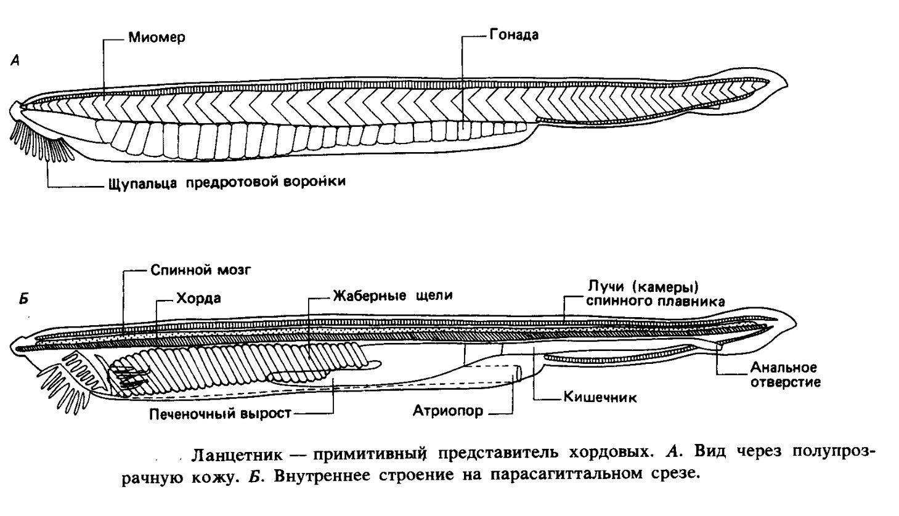

Головохордовые - немногочисленная группа (примерно 30 видов) наиболее примитивных исключительно морских хордовых животных. Общее распространение их приурочено к умеренным и теплым морям Атлантического, Индийского и Тихого океанов. Кожные покровы ланцетника состоят из двух слоев: наружного - эпидермиса и внутреннего - кутиса. Эпидермис у ланцетника однослойный и прикрыт снаружи тонким слоем кутикулы. Клетки эпидермиса цилиндрические. В этом же слое имеются бокаловидные железистые клетки, некоторые клетки имеют чувствующие волоски. Кутис выражен слабо и представлен студенистой рыхлой соединительной тканью. Мускулатура метамерна и малодифференцирована, ее большая часть находится на спинной стороне и в хвостовой области. Мышечный слой состоит из миомеров, Миомеры отграничены друг от друга соединительнотканными прослойками - миосептами. Миомеры левой и правой сторон тела расположены асимметрично. Мышечный слой, расположенный на брюшной стороне тела плоский и тонкий. Скелет представлен хордой. Вокруг хорды лежит толстый соединительнотканный слой, который окружает и лежащую над хордой нервную трубку. В области жаберных щелей располагается сеть опорных перекладин из волокнистого бесклеточного вещества. Опорой для плавников служат стержни плотной студенистой ткани; сходные образования составляют скелет предротовой воронки и щупалец. 
Центральная нервная система представлена продольной нервной трубкой. Внутренняя полость ее называется невроцелем. Края трубки на спинной стороне не срастаются, и невроцель имеет здесь вид узкой щели. На переднем конце нервной трубки невроцель несколько расширяется. Вдоль всей нервной трубки, по краям невроцеля, располагаются светочувствительные образования - глазки Гессе. Периферическая нервная система представлена нервами, отходящими от нервной трубки. При этом на один мышечный сегмент приходятся две пары нервов - спинная и брюшная. Спинные нервы в функциональном отношении являются смешанными - двигательно- чувствующими, брюшные - двигательными. Органы чувств примитивны. Световые раздражения воспринимаются глазками Гессе. Обонятельная ямка, видимо, воспринимает химические свойства воды. По всему телу в эпидермисе разбросаны чувствующие клетки, воспринимающие волновые раздражения. Питание и дыхание в значительной мере пассивные. Щупальца, расположенные по краю ротовой воронки, взмучивают детрит, а мерцательный эпителий направляет поток воды с пищей к ротовому отверстию. В глубине воронки расположен рот. Он окружен направляющими складками - парусом. Объемистая глотка прободена многочисленными жаберными щелями, которые открываются в атриальную, или околожаберную, полость. Атриальная полость сообщается с внешней средой через атриопор. По средней линии брюшной стороны глотки тянется желобок, или борозда, - эндостиль. Он выстлан железистыми и мерцательными клетками. Кишечник прямой и не подразделен на отделы. От брюшной стороны передней части кишки отходит печеночный вырост.
Кровеносная система ланцетника замкнутая. Сердца нет. Его роль играют брюшная аорта, лежащая под глоткой и основания жаберных артерий (жаберные сердца). В обе стороны от нее отходят парные жаберные артерии, проходящие в межжаберных перегородках. Жаберные артерии тонкостенны и не образуют капиллярных разветвлений, на спинной стороне глотки уже окисленная кровь поступает в парные наджаберные сосуды, или корни спинной аорты. На уровне заднего конца глотки они сливаются и образуют спинную аорту, которая идет вдоль тела до его заднего конца. На своем пути спинная аорта распадается на сосуды, идущие к внутренним органам. Вперед от корней аорты отходят сонные артерии, снабжающие кровью головной отдел тела. От переднего конца тела кровь собирается в парные яремные (или передние кардинальные) вены. От заднего конца тела кровь выносится парными задними кардинальными венами. Позади глотки передние и задние кардинальные вены соответствующих сторон сливаются и образуют два (левый и правый) широких тонкостенных кювьеровых протока. Из кювьеровых протоков кровь изливается в венозный синус, откуда берет начало брюшная аорта. Венозная кровь от внутренних органов собирается в подкишечную вену, которая, достигнув печеночного выроста, распадается в нем на сеть капилляров, образуя воротную систему печеночного выроста. Далее кровь течет по печеночной вене, впадающей в венозный синус. Кровь бесцветна: она не содержит ни форменных элементов, ни пигмента. Выделительная система представлена многочисленными (до 90 пар) нефридиями, расположенными в области глотки. По своему строению это протонефридии. Открываются нефридии в атриальную полость.
Ланцетники - раздельнополые животные. Их половые железы характеризуются многочисленностью и посегментным расположением. Они лежат в целоме и вдаются в атриальную полость в виде двух рядов округлых (яичники) или слегка вытянутых (семенники) тел - около 25 пар. Созревшие половые продукты выделяются в околожаберную полость, а затем через атриопор выносятся наружу. Оплодотворение у ланцетников наружное, яйца мелкие (диаметр - 0,1 мм), бедные желтком. В развитии имеется стадия планктонной личинки. Единственный отряд AMPНIOXIFORMES — ланцетникообразные; 2 семейства.
Схема строения ланцетника: А - внешний вид; показана сегментация мускулатуры и положение сегментарных половых желез; Б - нервная система, хорда, пищеварительная система: 1 - ротовые щупальца; 2 - парные метаплевральные складки; 3 - гонады; 4 - атриопор; 5 - непарная плавниковая складка; 6 - анальное отверстие; 7 - нервная трубка; 8 - хорда; 9 - ротовая полость; 10 - глотка с жаберными щелями; 11 - печень; 12 - средняя кишка; 13 - задняя кишка; 14 - атриальная полость
Схемы поперечных разрезов ланцетника: А - на уровне жаберной области, Б - на уровне средней кишки: 1 - нервная трубка; 2 - мускулатура; 3 - корни спинной аорты; 4 - яичник; 5 - гипобранхиальная борозда (эндостиль); 6 - брюшная аорта; 7 - метаплевральные складки; 8 - околожаберная (атриальная) полость; 9 - жаберные щели, благодаря косому положению (см. рис. 172, Б) на одном поперечном срезе их видно более одной пары; 10 - нефридии; 11 - целом; 12 - вентральный (двигательный) спинномозговой нерв; 13 - дорсальный (смешанный) нерв (12 и 13 в действительности не могут отходить или соответственно подходить к спинному мозгу на одном поперечном срезе, как показано на схеме); 14 - хорда; 15 - подкишечная вена; 16 - спинная аорта; 17 - спинной плавник
Нефридии ланцетника: А - целый каналец с нефростомами и соленоцитами; Б - часть стенки выделительного канальца с сидящими на ней соленоцитами: 1 - верхний конец жаберной щели; 2 - отверстие почечного канальца в околожаберную полость; 3 - нефростомы